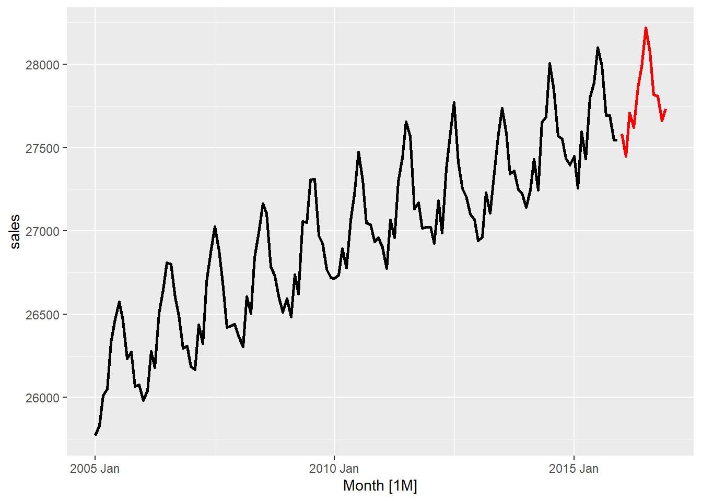
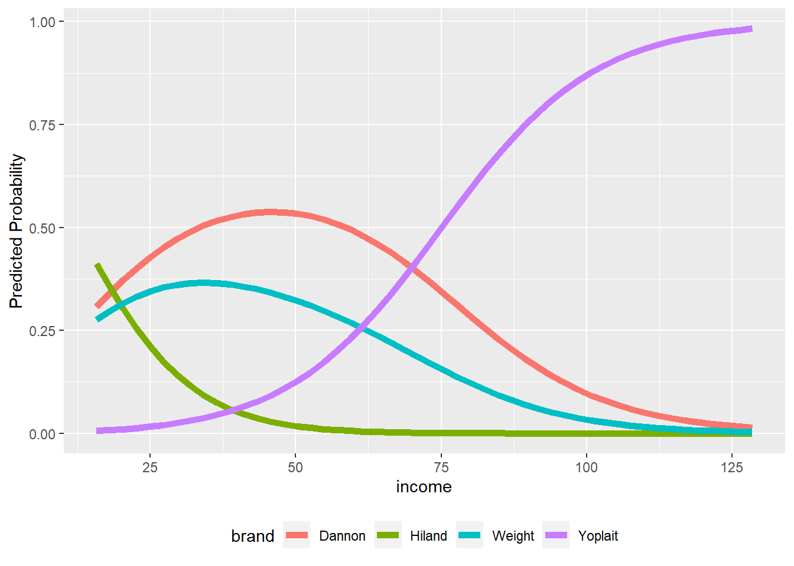
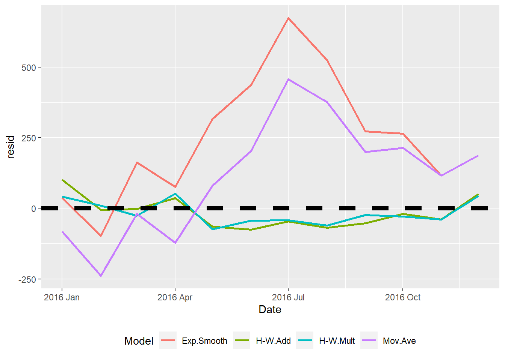
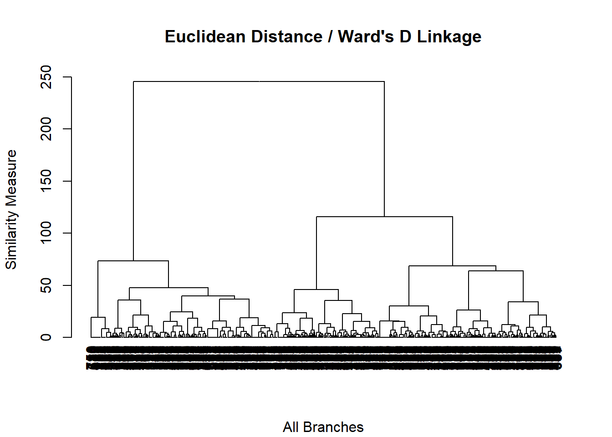

Chapter 11 Forecasting
Data for this chapter:
- The msales.rdata and qsales.rdata are used. Load them now.
# You may need to change the directory
load("Data/msales.rdata")
load("Data/qsales.rdata")11.1 Introduction
While Base R does have some time-series forecasting capabilities, there are several packages that make working with the data and running the analysis easier. For our class, we will be mainly using the fpp3 package inside of some user-defined functions. The user-defined functions are described briefly below, and then in detail in their own sections.
- tsplot.R produces a time series plot of the data
- naivefc.R analyzes the data using naive forecasting methods
- smoothfc.R analyzes the data using smoothing forecasting methods
- linregfc.R analyzes the data using regression-based forecasting methods
- fccompare.R compares models from saved results after running the methods functions
11.1.1 Packages
You must have the following packages installed to use all of the user-defined functions. If you do not have them installed, you should do so now.
fpp3sliderpurrrdplyrggplot2
# Load necessary packages
library(fpp3)
library(slider)
library(purrr)
library(ggplot2)
library(dplyr)11.2 tsplot User Defined Function
- Usage:
tsplot(data, tvar="", obs="", datetype=c("ym", "yq", "yw"), h= )datais the name of the dataframe with the time variable and measure variabletvaris the variable that identifies the time period (in quotes)obsis the variable that identifies the measure (in quotes)datetypecan be one of three options:"ym"if the time period is year-month"yq"if the time period is year-quarter"yw"if the time period is year-week
his an integer indicating the number of holdout/forecast periods
- Output: A time series plot
source("tsplot.R")
tsplot(msales, "t", "sales", "ym", 12)
tsplot(qsales, "t", "sales", "yq", 8)
11.3 naivefc User Defined Function
- Usage:
naivefc(data, tvar="", obs="", datetype=c("ym", "yq", "yw"), h= )datais the name of the dataframe with the time variable and measure variabletvaris the variable that identifies the time period (in quotes)obsis the variable that identifies the measure (in quotes)datetypecan be one of three options:"ym"if the time period is year-month"yq"if the time period is year-quarter"yw"if the time period is year-week
his an integer indicating the number of holdout/forecast periods
- NOTE 1: The results of this function should be saved to an object. When doing so, the following objects are returned:
$plotcontains the naive methods plot$acccontains the accuracy measures$fcresplotcontains a plot of the holdout period residuals$fcresidis a dataframe of the holdout period residuals (seldom used separately)
- Note 2: The model names are:
- Naive for the naive model
- Naive.Drift for the naive model with drift
- Seas.Naive for the seasonal naive model
- Seas.Naive.Drift for the seasonal naive model with drift
source("naivefc.R")
naive <- naivefc(msales, "t", "sales", "ym", 12)
naive$plot
naive$acc Model RMSE MAE MAPE
1 Naive 323.496 263.917 0.945
2 Naive.Drift 253.103 185.868 0.665
3 Seas.Naive 133.710 127.417 0.459
4 Seas.Naive.Drift 45.769 41.417 0.149naive$fcresplot
## smoothfc User Defined Function
- Usage:
smoothfc(data, tvar="", obs="", datetype=c("ym", "yq", "yw"), h= )datais the name of the dataframe with the time variable and measure variabletvaris the variable that identifies the time period (in quotes)obsis the variable that identifies the measure (in quotes)datetypecan be one of three options:"ym"if the time period is year-month"yq"if the time period is year-quarter"yw"if the time period is year-week
his an integer indicating the number of holdout/forecast periods
- NOTE 1: The results of this function should be saved to an object. When doing so, the following objects are returned:
$plotcontains the smoothing methods plot$acccontains the accuracy measures$fcresplotcontains a plot of the holdout period residuals$fcresidis a dataframe of the holdout period residuals (seldom used separately)
- Note 2: The model names are:
- Mov.Ave for the moving average model
- Exp.Smooth for the exponential smoothing model
- H-W.Add for the Holt-Winters Additive model
- H-W.Mult for Hold-Winters Multiplicative model
source("smoothfc.R")
smooth <- smoothfc(msales, "t", "sales", "ym", 12)
smooth$plot
smooth$acc Model RMSE MAE MAPE
1 Exp.Smooth 323.495 263.915 0.945
2 H-W.Add 54.469 46.754 0.168
3 H-W.Mult 43.857 40.626 0.146
4 Mov.Ave 225.685 191.245 0.686smooth$fcresplot
11.4 linregfc User Defined Function
- Usage:
linregfc(data, tvar="", obs="", datetype=c("ym", "yq", "yw"), h= )datais the name of the dataframe with the time variable and measure variabletvaris the variable that identifies the time period (in quotes)obsis the variable that identifies the measure (in quotes)datetypecan be one of three options:"ym"if the time period is year-month"yq"if the time period is year-quarter"yw"if the time period is year-week
his an integer indicating the number of holdout/forecast periods
- NOTE 1: The results of this function should be saved to an object. When doing so, the following objects are returned:
$plotcontains the regression methods plot$acccontains the accuracy measures$fcresplotcontains a plot of the holdout period residuals$fcresidis a dataframe of the holdout period residuals (seldom used separately)
- Note 2: The model names are:
- Lin.Reg.Trend for the linear regression with trend model
- Line.Reg.Seas.Trend for linear regression with trend and seasonlity model
source("linregfc.R")
linreg <- linregfc(msales, "t", "sales", "ym", 12)
linreg$plot
linreg$acc Model RMSE MAE MAPE
1 Lin.Reg.Seas.Trend 55.212 47.898 0.172
2 Lin.Reg.Trend 199.198 168.985 0.607linreg$fcresplot
11.5 fccompare User Defined Function
- Usage:
fccompare(results, models)resultsis a list of the stored methods results; create the list with thelistfunction, such as:results <- list(naive, smooth, linreg)modelsis a vector of the models you want to compare; create the vector with thec()function, such as:models <- c("Naive", "Mov.Ave", "Lin.Reg.Trend")
- NOTE 1: The function returns two items that will be directly displayed or can be saved to an object:
$acccontains the accuracy measures$fcresplotcontains a plot of the holdout period residuals
source("fccompare.R")
results <- list(naive, smooth, linreg)
models <- c("Naive", "Mov.Ave", "Lin.Reg.Trend")
fccompare(results, models)$acc
Model RMSE MAE MAPE
1 Naive 323.496 263.917 0.945
8 Mov.Ave 225.685 191.245 0.686
10 Lin.Reg.Trend 199.198 168.985 0.607
$fcresplot